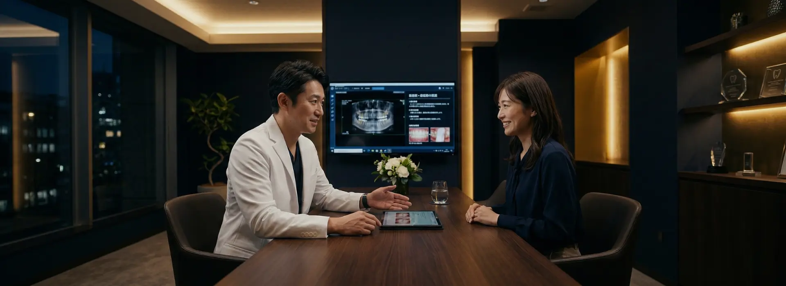
当院の特徴・選ばれる理由
ABOUT US
歯を守ることが、人生を守ること。
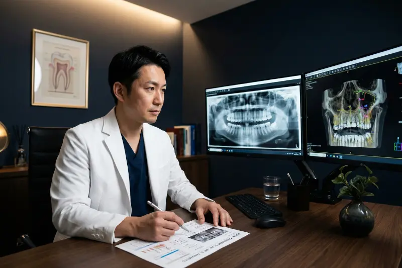
10年後、20年後を見据えた根本治療
痛いところだけを削って詰める。そのような「その場しのぎ」の治療を繰り返すと、最終的には大切な歯を失ってしまいます。
当院では、むし歯や歯周病になった「原因」を徹底的に追究し、口腔内全体のかみ合わせやバランスを考慮した包括的な根本治療を行います。
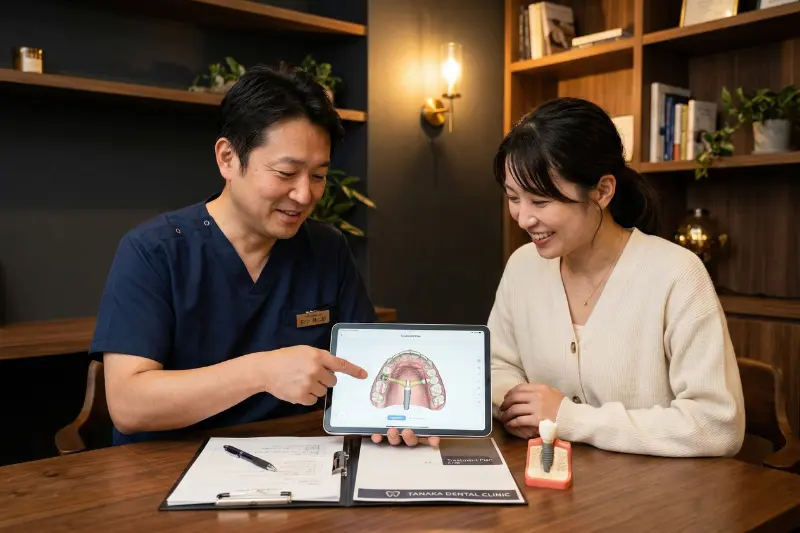
ご納得いただけるまでの丁寧な説明
患者さまご自身が、ご自身のお口の現状と治療の選択肢を正しく理解することが、良い治療の第一歩です。
専門用語を使わず分かりやすくご説明し、メリット・デメリット、費用や期間をお伝えした上で、患者さまに治療法をお選びいただく「インフォームドコンセント」を徹底しています。
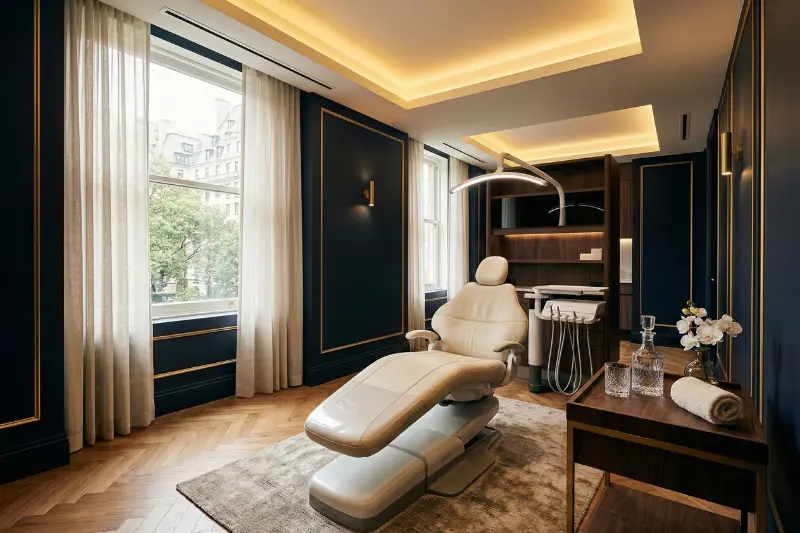
不安を和らげる、完全個室の上質空間
「歯医者は怖い・行きたくない場所」というイメージを変えたい。
その想いから、まるで高級ホテルのような落ち着いた空間をデザインしました。患者さまのプライバシーをお守りするため、カウンセリングルームから診療室まで「完全個室」となっております。周囲の目を気にすることなく、リラックスして治療をお受けいただけます。
当院が選ばれる6つの理由
専門医・認定医による
高度な治療
日本口腔インプラント学会認定医をはじめ、各分野に精通した歯科医師が在籍。高い専門性と豊富な経験に基づき、難易度の高い症例にも対応可能です。
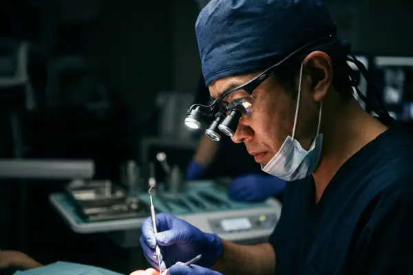
マイクロスコープによる
精密治療
肉眼の最大20倍まで拡大して患部を見ることができる「歯科用顕微鏡」を導入。削る量を最小限に抑え、再発リスクの極めて低い精密な治療を実現します。
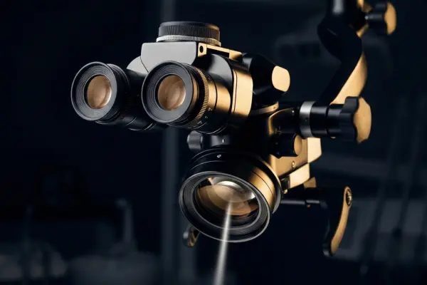
歯科用CT・スキャナー
による正確な診断
従来の平面レントゲンでは見えない顎の骨の立体構造や神経の位置を、3Dで正確に把握。さらに口腔内スキャナーで、苦しい型取りをせずに快適に治療を進めます。
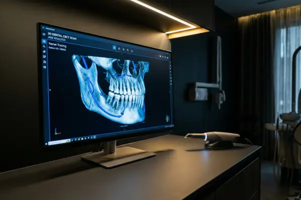
完全個室の
プライベート空間
他の方と顔を合わせることなく、お悩みを相談できる完全個室の診療室とカウンセリングルーム。ゆったりとした広さで、圧迫感のないリラックスできる環境です。
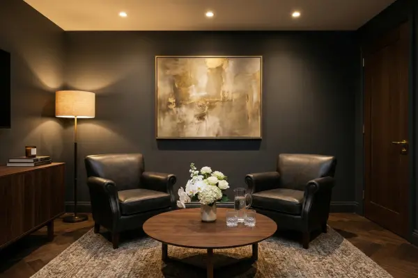
痛みに最大限
配慮した治療
「歯科治療の痛みが怖い」という方のために、事前の表面麻酔、極細の注射針、電動麻酔器を使用。必要に応じて、リラックスできる笑気麻酔もご用意しています。
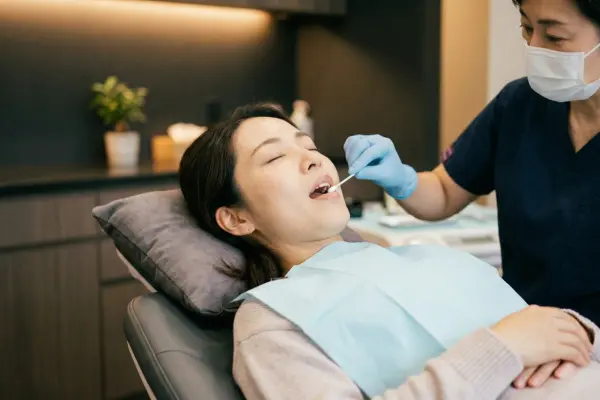
明瞭な料金体系と
デンタルローン対応
自費診療においては、治療前に必ず総額のお見積りをご提示し、後から追加費用が発生することはありません。最大84回のデンタルローンにも対応しています。
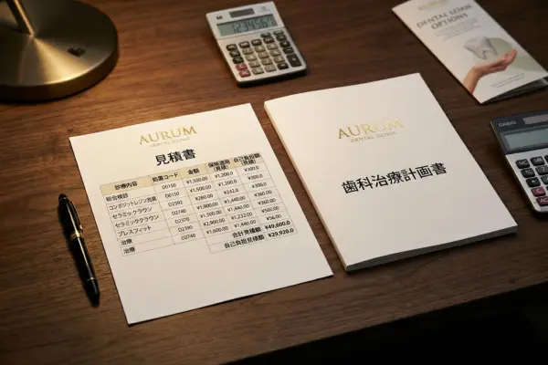
最新の医療設備
歯科用CT（3Dレントゲン）
顎の骨の厚みや神経・血管の位置まで三次元で精密に立体的に把握。インプラントや難しい根管治療になくてはならない設備です。
マイクロスコープ
肉眼の最大20倍に視野を拡大できる歯科用顕微鏡。虫歯の取り残しを防ぎ、歯の寿命を延ばす精密な治療を可能にします。
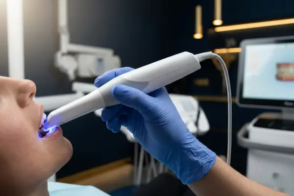
口腔内スキャナー（iTero）
小型カメラで口の中をスキャンするだけで歯型が取れる最新機器。不快な粘土のような型取り材を使わず、短時間で精密な型取りが可能です。
まずは無料カウンセリングから
治療内容・費用・期間について、専門医が丁寧にご説明いたします。
ご不安な点もお気軽にご相談ください。
お電話でのご予約
03-0000-0000